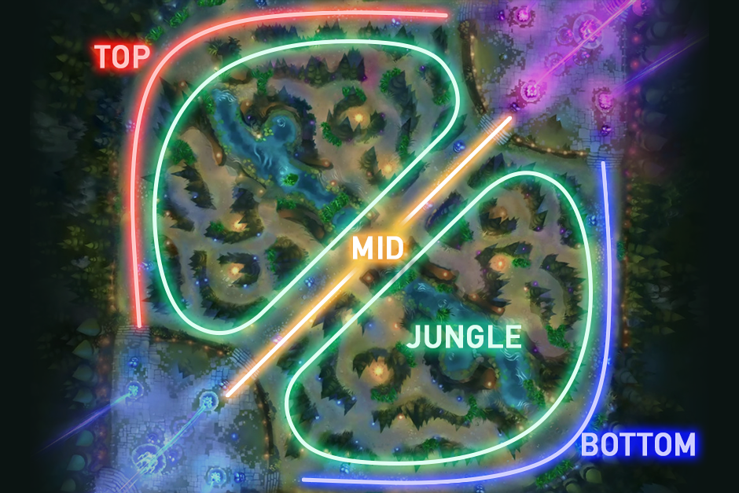

Summoner's Rift is the flagship game mode of League of Legends and the most prominent in professional-level play. The mode has a ranked competitive ladder; a matchmaking system determines a player's skill level and generates a starting rank from which they can climb. There are nine tiers; the least skilled are Iron, Bronze, and Silver, and the highest are Master, Grandmaster, and Challenger. Two teams of five players compete to destroy the opposing team's nexus, which is guarded by the enemy champions and defensive structures known as turrets.Each team's nexus is located in their base, beside the "fountain"—where players start the game or reappear after a death. Minions, which are not controlled by players, are generated from each team's three inhibitors. These inhibitors are structures located behind the third tower of each lane. Destroying one of the enemy team's inhibitors causes stronger allied minions to spawn in that lane. Minions advance toward the opposing team's base along three lanes guarded by turrets: top, middle, and bottom. In the "jungle"—the region between lanes—are "monsters" that, like minions, reappear at regular intervals. Like minions, monsters provide gold and XP when killed. Another, more powerful class of monster resides within the river that separates each team's jungle. These monsters require multiple players to defeat and grant special abilities to their slayers' team. For example, a team that slays Baron Nashor greatly increases the durability of their minions, making it difficult for enemy players to clear them. Summoner's Rift matches can last from as little as 15 minutes to over an hour. The top and middle lanes have one champion each per side; the bottom lane has two. Players in a lane kill minions to accumulate gold and XP ("farming") and try to prevent their opponent from doing the same. A fifth champion, known as a "jungler", farms the jungle monsters and, when powerful enough, assists their teammates in a lane. Although the game does not enforce where players may go, conventions have arisen over the game's lifetime. 